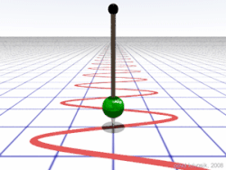
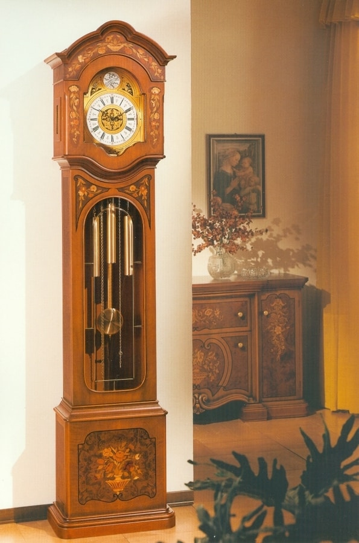
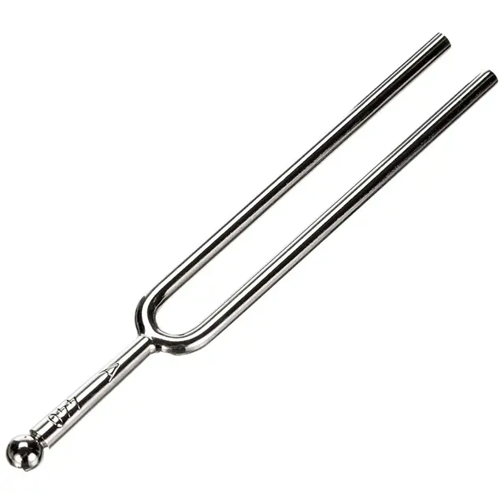
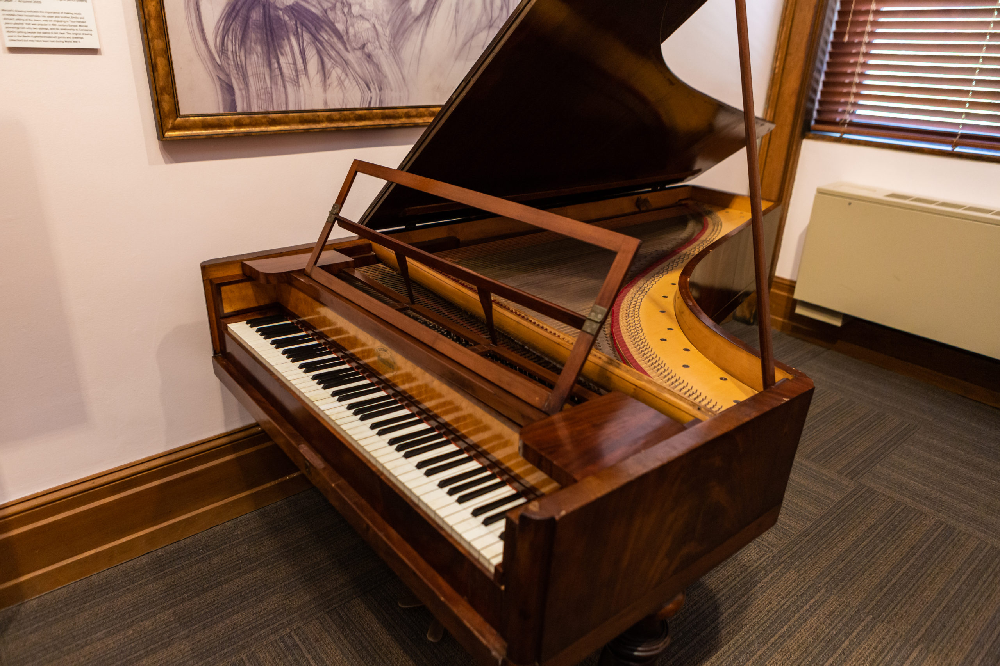
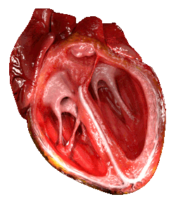
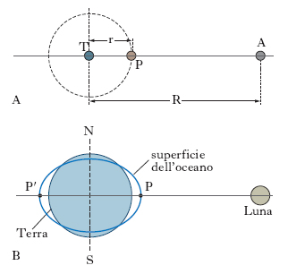
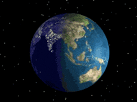
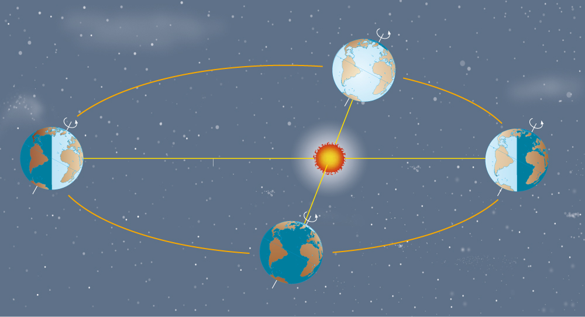
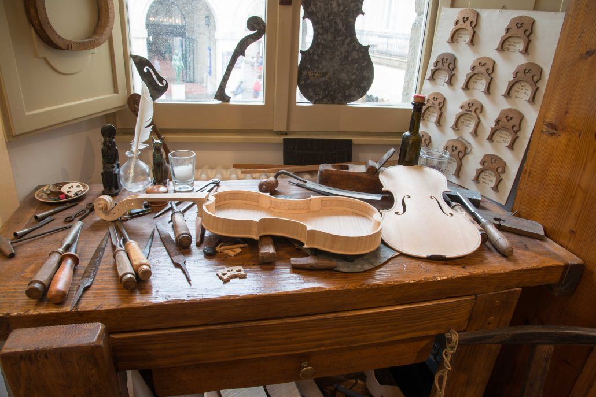
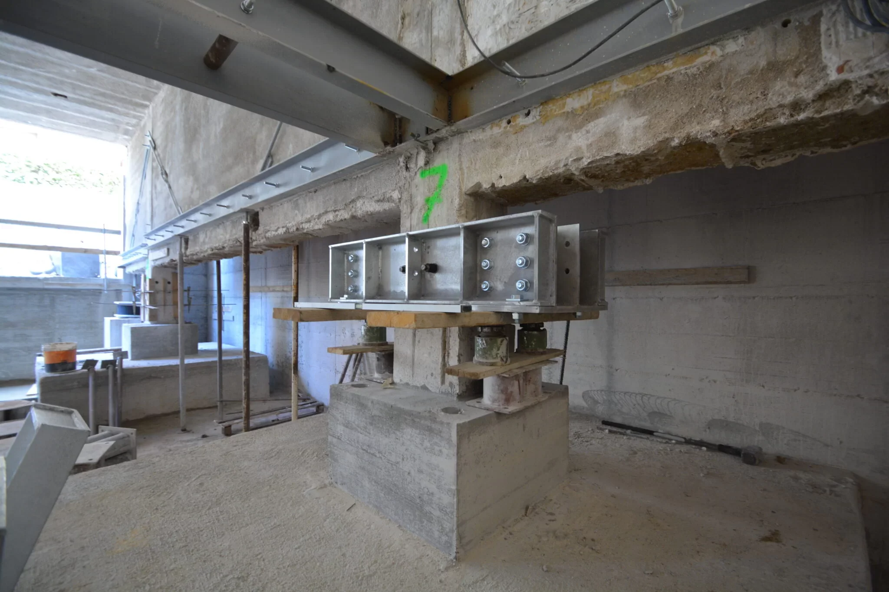

Evidentemente le oscillazioni sono possibili solo se è in gioco qualche forza!
Perché un corpo torni indietro, è infatti necessario che una forza lo faccia decelerare fino a fermarlo, per poi farlo tornare indietro
Le forze adatte allo scopo sono molte:
- Elastiche (molla)
- Gravitazionale (altalena, pendolo)
- Etc.
Fisica – Lezione 4
Oscillazioni ed onde
Maurizio Tomasi (maurizio.tomasi@unimi.it)
Lunedì 27 ottobre 2025
Introduzione all’argomento di oggi
- Oggi introdurremo il concetto di “oscillazione” e “risonanza”
- Sono i fondamenti che ci consentiranno di studiare come si comportano le onde sonore
- Vedremo come spiegare le oscillazioni in termini di leggi di Newton
Inquisitori accademici onorari
Perché parliamo di oscillazioni?
- Un’oscillazione è un movimento periodico di un corpo che si sposta tra due posizioni estreme
- Semplificando, è un moto “avanti e indietro” che si ripete
- Alcuni esempi:
- Altalena
- Pendolo di un orologio
- Corda di una chitarra
Oscillazioni e Newton

Forze elastiche
- Le forze elastiche sono ovviamente quelle associate all’energia elastica E_e che avevamo visto nella scorsa lezione
- Una forza elastica agisce quando un corpo viene deformato da una forza esterna, cercando di riportare il corpo alla forma originaria
- Esempi:
- Elastici da cucina
- Molle degli orologi
- Strumenti musicali a corda (violino, chitarra, arpa, pianoforte…)
Forze elastiche
- Una forza elastica:
- Richiama verso sinistra quando il corpo è deformato verso destra
- Richiama verso destra quando il corpo è deformato verso sinistra
- Ovviamente potete sostituire a destra/sinistra anche alto/basso, avanti/indietro… Il concetto resta sempre lo stesso

Energia elastica
- In termini di energia:
- Quando si allunga/comprime una molla, si accumula energia elastica
- Rilasciandola, l’energia elastica si converte in energia cinetica
- Nel caso ideale, l’energia elastica e cinetica continuano a convertirsi tra loro, mantenendo la somma uguale
Il pendolo
- Un pendolo agisce grazie alla forza di gravità…
- …ma l’asta del pendolo impedisce alla gravità di far cadere a terra la sua massa terminale
- La combinazione dell’azione di gravità ed asta porta ad una forza complessiva che è qualitativamente uguale ad una forza elastica
- Certi testi parlano proprio di “energia elastica”, ma è energia potenziale gravitazionale

Periodo e frequenza
Il tempo necessario perché un pendolo faccia un’oscillazione completa è detto periodo, e di solito si indica con T
Viene molto usata anche la quantità inversa, la frequenza \nu:
\nu = \frac1{T} \quad \Rightarrow \quad T = \frac1\nu.
Nel SI, il periodo si misura in secondi e la frequenza in s⁻¹. L’unità s⁻¹ viene indicata anche con il simbolo Hz (“Hertz”)
Trucco pratico: Un numero in Hertz dice quante oscillazioni si compiono in un secondo.
Esempi di periodi e frequenze
Il diapason
Il diapason è uno strumento che si usa per accordare gli strumenti musicali
È fatto da una forcella metallica, dimensionata in modo da oscillare 440 volte al secondo
La frequenza di oscillazione è quindi 440 Hz, e il periodo è
T = \frac1{\nu} = \frac1{440\,\text{Hz}} \approx 0{,}0023\,\text{s} = 2{,}3\,\text{ms}.

Il metronomo
A differenza del diapason, il metronomo ha una frequenza impostabile agendo sul peso montato sulla barra oscillante
Se siete curiosi, questo video spiega il suo funzionamento
I numeri del metronomo non indicano gli Hertz, ma i “battiti al minuto”
Per un Allegro vivace potreste scegliere 120 battiti al minuto, che corrisponde a T = 0{,}5\,\text{s} e \nu = 2\,\text{Hz}.

Il pianoforte
Il pianoforte copre circa sette ottave: il suono più grave (La₀) ha una frequenza \nu di circa 27 Hz, quello più acuto (Do₈) di circa 4190 Hz!
Ad ogni ottava la frequenza raddoppia:
Nota Frequenza (Hz) La₀ 27,5 La₁ 55,0 La₂ 110,0

Il cuore umano
Il battito cardiaco a riposo è di circa 60 pulsazioni al minuto
Il periodo è quindi T = 1\,\text{s}, e la frequenza è \nu = 1\,\text{Hz}
Per curiosità, il battito a riposo di un colibrì è di 600 pulsazioni al minuto, quindi T = 0{,}1\,\text{s} e \nu = 10\,\text{Hz}.

Terremoti
Il periodo di oscillazione di un’onda sismica è molto variabile
Nell’immagine a fianco (terremoti del 2010–2011 a Christcurch, in Nuova Zelanda) si può stimare che il periodo dell’onda fosse inferiore al secondo, quindi 1\,\text{Hz} < \nu < 10\,\text{Hz}.

Maree
- Causate dall’attrazione gravitazionale della Luna
- Due rigonfiamenti contemporanei (sotto la Luna e all’altra estremità)
- I rigonfiamenti sono sempre allineati con la Luna, ma la Terra ruota
- T = 12\,\text{h} = 43,2\,\text{ks}, \nu = 23{,}1\,\mathrm{\mu Hz}

Giorno/notte
La rotazione della Terra attorno al suo asse determina l’alternanza notte/dì
Il periodo è ovviamente di 24 ore, ossia T = 86{,}4\,\text{ks}, e \nu = 11{,}6\,\mathrm{\mu Hz}

Anno solare
Il moto della Terra attorno al sole è detto rivoluzione, e richiede circa 365 giorni
(In realtà ci vogliono un po’ più di 365 giorni: ecco perché esistono gli anni bisestili!)
T = 365\,\text{d} = 31{,}5\,\text{Ms}, \nu = 31{,}7\,\text{nHz}

Giostra
Provate a stimare il periodo e la frequenza di questa giostra:
Originale su YouTube
Tipi di moti oscillatori
Oscillazioni libere
- Le “oscillazioni libere” sono tutte quelle oscillazioni originate da una forza che, dopo aver dato un impulso iniziale, cessa di operare
- In seguito a quell’impulso, l’oscillazione continua grazie alla sola forza elastica
- Il moto di un pendolo o di una molla è solo in prima approssimazione libero
Oscillazioni smorzate
Nella realtà, ci sono sempre altre forze in gioco che fermano le oscillazioni: un’altalena, se non spinta periodicamente, si ferma!
È quindi impossibile avere un’oscillazione libera perpetua
Quali sono queste forze aggiuntive che impediscono alle oscillazioni di continuare?
Arresto di un’altalena
Le forze che arrestano un’altalena sono le seguenti:
L’attrito dell’aria in cui è immersa l’altalena
Il non perfetto scorrimento delle sospensioni (catene o corde) intorno ai perni
Queste forze convertono l’energia cinetica e potenziale dell’oscillazione in calore, che si disperde sia nell’aria che nelle sospensioni
Forze viscose
L’attrito dell’aria è una cosiddetta forza viscosa
Le forze viscose intervengono quando un corpo si muove, mentre sono nulle se il corpo è fermo
In altre parole, più velocemente un corpo si muove, più intense sono le forze viscose, secondo la formula
F = - c v,
dove il segno meno indica che la forza si oppone sempre alla velocità, e c è un coefficiente che dipende sia dalla viscosità del fluido che dalle dimensioni del corpo.
Forze viscose
Il coefficiente c ha queste unità di misura:
c = \frac{F}{v} \quad \Rightarrow \quad \left[c\right] = \mathrm{kg/s}.
Più è grande c, più resistenza oppone il fluido in cui si muove il corpo: il miele offre più resistenza dell’acqua!
Corpi in caduta nell’aria
Un corpo in caduta aumenta la sua velocità di 10 m/s ogni secondo che passa. Ma la forza viscosa dell’aria arresta dopo un certo tempo l’accelerazione, e la velocità diventa costante
Grazie all’aria, la velocità delle gocce di pioggia non supera gli 8 m/s: senza di essa sarebbero come una palla da bowling lasciata cadere da un’altezza di 1 m!
I paracadute hanno un grande coefficiente c, che permette di tenere bassa la velocità di discesa
Smorzamento critico
Se le forze che si oppongono all’oscillazione sono intense, il corpo potrebbe non oscillare proprio!
Quello che succede è che la molla torna alla posizione di riposo, e non la oltrepassa: si ferma e da lì non si muove più
Questo è desiderabile in certi casi: ad esempio, gli ammortizzatori delle auto realizzano uno smorzamento critico per evitare che le sospensioni dell’auto oscillino troppo dopo una buca
Smorzamento critico
Si può calcolare (ma è complicato!) quanto deve valere c per avere uno smorzamento critico; il risultato è
c_\text{crit} = 2\sqrt{k m},
dove k è la costante della molla e m è la massa del corpo attaccato alla molla.
Se c è maggiore di questo valore critico, non si hanno oscillazioni
Siccome c dipende dalle dimensioni e dalla forma del corpo, può essere che alcuni corpi oscillino ed altri no
Risonanza
Risonanza
Di solito, se si mette in moto un sistema oscillante, si desidera che l’oscillazione continui! (Non è il caso delle sospensioni delle auto…)
Senza un meccanismo che impedisca lo smorzamento dell’oscillazione, un orologio o un metronomo sarebbero ben poco utili!
Per poter vincere le forze viscose e di attrito (che “degradano” l’energia), è necessario fornire periodicamente energia:
Tramite una molla (metronomo, orologio a molla)
Tramite una batteria (orologio al quarzo)
Ampiezza infinita?
Il programma precedente potrebbe dare l’illusione che in una risonanza l’ampiezza tenda sempre all’infinito
Nella realtà i fenomeni viscosi spesso pongono un limite massimo all’ampiezza raggiungibile
Per capire come si comporta un oscillatore in risonanza, bisogna tenere conto di questi fattori:
L’intensità della forzante, che tende a far aumentare l’ampiezza
L’intensità delle forze viscose, che tende a limitare le oscillazioni
Esempi di risonanza
Spinta di un’altalena
Per compensare l’attrito dell’aria e le catene non ideali, bisogna continuare a spingere un bambino sull’altalena
Il fatto che venga naturale spingere ad ogni oscillazione completa corrisponde a quanto abbiamo visto: la forza deve essere sincrona col periodo di oscillazione!
Casse armoniche
Una cassa armonica inizia ad oscillare quando la corda ad essa collegata oscilla
Questo è un fenomeno di risonanza, perché la cassa armonica vibra alla stessa frequenza della corda
Vedremo meglio nelle prossime lezioni il comportamento degli strumenti musicali

Edifici antisismici
Nessun edificio è perfettamente rigido: tutti, se sollecitati, vibrano
Un po’ come un diapason, ogni edificio ha la sua frequenza caratteristica (più l’edificio è alto, minore è la sua frequenza caratteristica)
Questo significa che se un terremoto fa vibrare l’edificio alla frequenza “sbagliata”, potrebbe generarsi una risonanza… con conseguenze mortali!
È questo il motivo per cui anche edifici particolarmente robusti possono essere distrutti da un’onda sismica
Edifici antisismici
In un edificio antisismico, si inseriscono degli isolatori sismici
Si tratta di elementi inseriti nelle fondamenta, che aumentano il periodo di oscillazione in modo che sia maggiore delle frequenze tipiche delle onde sismiche
Il risultato è che non è possibile instaurare una risonanza, perché durante un terremoto il suolo vibra troppo rapidamente perché l’edificio lo avverta

Conclusioni
Cosa sapere per l’esame
- Forze elastiche e oscillatori semplici
- Periodo e frequenza, valori tipici delle oscillazioni viste in classe
- Oscillazioni libere e smorzate
- Risonanza
- Esempi in musica, natura e tecnologia